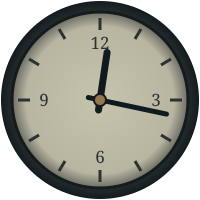

YUNJIANG STATION
云江站 · 末班之后
案件简报
案件行动6 / 601 / 03

林雾 / LIN WU她避开你的目光。
CASE FILE WTL—029
你的调查，从最后一班车开始
末班之后THE LAST TRAIN
周序被报告失踪。你来到云江站，调查他是否登上了最后一班列车。没有人能给出确定的答案。
01
先观察，再询问。看见的东西并不等于已经证实的事实。
先让现场说话
点击光点观察物品。未检查的痕迹不会进入你的证据记录。
林雾 / LIN WUWITNESS TURN
林雾正在斟酌你的话…
本地对白为模拟；证据与案件状态真实保存。
案件回执
此结果由 HAL 的证据、关系与承诺规则裁定。